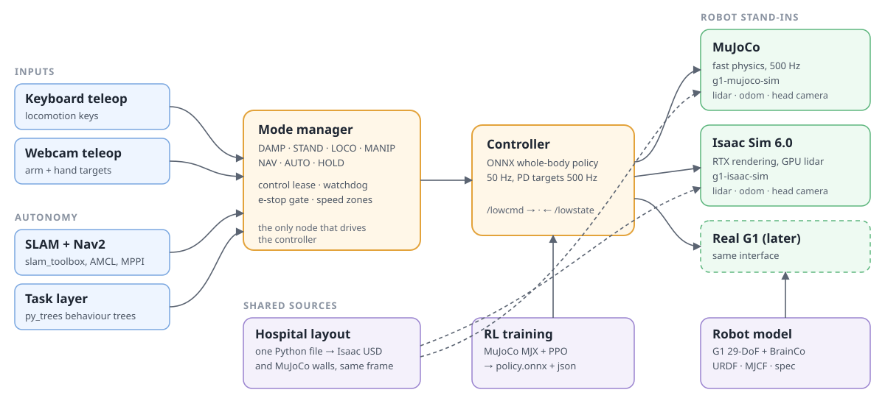
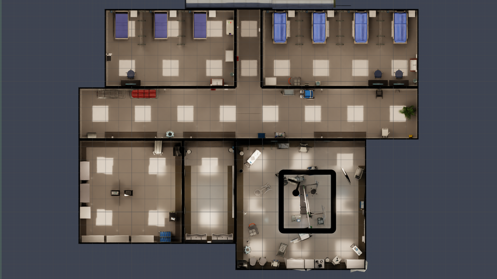
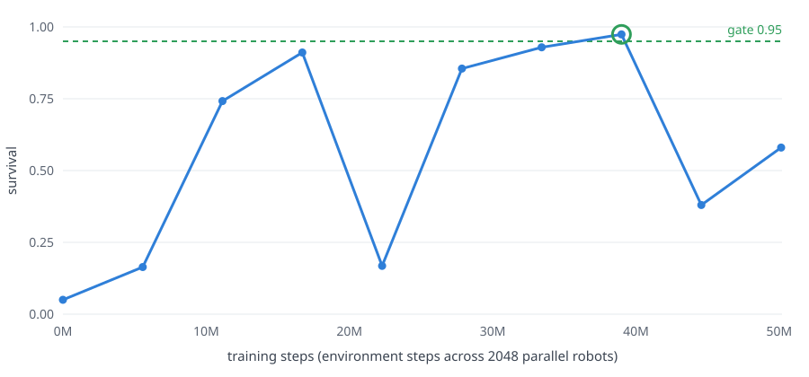

Latest · Independent research · Open source
WardZero: a simulated hospital for robots.
WardZero is an open platform to develop and test robot solutions for hospitals. It gives a full simulated hospital, two simulators, a safety layer and navigation. The reference robot is a Unitree G1 humanoid with two BrainCo Revo2 hands. Robots train in WardZero before they work near patients.
Film
Hospital and surgical wing in Isaac Sim 6.0, path traced. The camera moves on a scripted path. It is not a robot view.
Results in simulation
What
WardZero is a full simulated hospital for robot development. The hospital has a surgical wing with corridors, pre-operative bays, a recovery ward, a sterile store, a scrub room and an operating theatre. Users can bring their own robot, controller or task. The platform is for mapping, navigation, controller training, teleoperation, safety functions and robot tasks. It also records synchronised sensor data with exact ground truth.
How
All parts use the low-level interface of the real robot. The controller sends motor targets on /lowcmd at 500 Hz. It reads the joint states on /lowstate. Thus, the same software runs in MuJoCo, in Isaac Sim and on the real robot.
The component repositories with the prefix hospital-sim- contain no robot-specific code. A different robot supplies its own model, simulator bindings and controller. Thus, the platform is robot agnostic.
Results
The hospital, the two simulators, the safety layer, teleoperation, mapping and navigation are complete. The controller completed training stage A1 (stand). All tests used simulation only. No test on a real robot and no sim-to-real test is complete yet.
System architecture

The controller sends /lowcmd and receives /lowstate, as on the real robot. The simulators also publish the lidar scan, the odometry and the head camera.
All input sources send requests to the mode manager. The mode manager uses a control lease, a watchdog, an emergency-stop gate and speed zones.
One Python layout file defines the hospital. It makes the Isaac scene and the MuJoCo walls in the same world frame. Thus, a map from one simulator is correct in the other.
World
The hospital is the NVIDIA Isaac Sim hospital building. A generated surgical wing connects to its south-east door. The wing uses the operating theatre and the props of NVIDIA Isaac for Healthcare and Lightwheel SimReady.
A generator makes the scene from the layout file. A build check stops the build if furniture blocks a door, if two props overlap or if a prop is outside its room. The corridors are 2 m and 4 m wide. The doors have 2 m of clear width.
The scene uses a reduced copy of the assets, so it can run on an 8 GB graphics card. The light levels are calibrated, so the white walls do not show as plain white.

Simulation for training and test
Two simulators replace the robot. They use the same low-level interface. All the software above the controller is the same in the two simulators.
MuJoCo gives fast physics. The ROS 2 simulator node steps it at 500 Hz, and MuJoCo MJX trains the controller. Isaac Sim gives realistic rendering, a GPU lidar and a head camera. Use Isaac Sim to test navigation and perception with realistic sensor data.
Controller training
PPO trains the whole-body controller in MuJoCo MJX. 2048 robots train in parallel on one RTX 3070. The curriculum has three stages. Stage A teaches the robot to stand. Stage B teaches it to walk with arm targets. Stage C teaches it to follow full-body motions.
A teacher policy with privileged data trains a student policy. The student uses only the sensors of the real robot. The controller loads the student as an ONNX file. Each stage has gates, and the trainer keeps the checkpoint that passes the gates.

Stage A1 result
Stage A1 is complete. The survival increased from 0.05 to 0.97 in 39 million steps. The stage took approximately one hour.
Before the training, the policy falls after 1.0 s. After the training, it stands for the full 11 s test. The maximum tilt is 2.7 degrees.
To examine the robot model, WardZero also runs the released ULTRA teacher policy. This is a third-party policy with a non-commercial licence. Approximately 90% of the motion clips complete, with a mean body position error of approximately 5.6 cm.
Teleoperation and safety
All input sources send requests to the mode manager, and the mode manager makes the decision. A control lease sets which source has control. A watchdog sets HOLD if the interface signal stops. A hardware emergency stop has priority over all inputs. Speed zones on the map set the maximum speed.
Webcam teleoperation controls the arms and the hands. MediaPipe tracks the operator, and a fork of xr_teleoperate calculates the arm and finger positions. The operator does not need a VR headset.
Autonomy
Navigation uses standard ROS 2 packages. slam_toolbox makes the map. AMCL finds the position of the robot on the map. Nav2 with the MPPI controller plans the path and drives the robot.
In the test, the robot moved on a route of 60 points through the hospital and the surgical wing. slam_toolbox made the map from the lidar during the walk. 99.6% of the wall cells are within 0.10 m of the Isaac ground truth. The map shows 96.6% of the floor that the robot can reach.
Components
Status and next steps
Stills
Disclaimer. WardZero is research software in development. All tests used simulation only. WardZero is not a medical device. It is not for patient care, for a clinical procedure, or for the control of a real robot near people without a separate safety analysis, tests and approvals.
Assets. Hospital building: NVIDIA Isaac Sim (NVIDIA Limited Use Content). Operating theatre: NVIDIA Isaac for Healthcare (Apache 2.0). Surgical props: Lightwheel SimReady assets © Lightwheel AI, CC BY-NC 4.0. Robot: Unitree G1 descriptions from unitree_ros and BrainCo Revo2 hand descriptions. Based on hospital-sim by Bkrakshith.